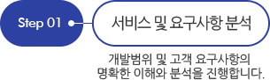
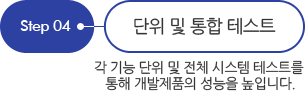
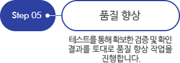
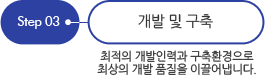
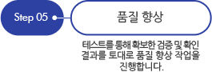

SOLUTION DEVELOPMENT
사물 및 객체 인식, 사운드 엔진, VR & Beacon 분야의 앞선 기술을 중심으로 고객의 만족도를 최상으로 높이고 시장의 트렌드를 이끌어 나가고 있습니다.
COMPUTER
VISION- e-Commerce와 사물 및 객체 인식 기술을 융합한SKT 바스켓, SKT My Powder Room 서비스를 통해 고객에게 혁신적이고, 특별한 경험을 선사합니다.
SOUND
PROCESSING- 다양한 형태의 사운드 포맷 처리 및 이퀄라이징 기술과 주파수 변환, 변조 기술은 다양한 산업 분야에 적용되어 폭넓게 이용되고 있습니다.
VR&
BEACON- VR(Virtual Reality) 및 Beacon 기술을 통해 다가오는 IOT 시대의 핵심 기술력을 갖춘 기업으로 성장하고 있습니다.
PLATFORM OPERATION
서비스 플랫폼 및 메시징 인프라 개발 / 운영능력은 고객사의 핵심니즈와 가치를 모두 만족시키고 있습니다.
-
SKP T cloud 개발 및 유지보수
T Cloud는 디지털 기기에 상관없이 내가 가진 모든 콘텐츠를 스트리밍하거나 다운로드할 수 있는 서비스로, 스마트폰, 태블릿 PC, PC의 데이터를 보관하고, 공유 및 열람할 수 있는 개인 통합 콘텐츠 관리 서비스입니다. 주소록과 SNS 데이터 백업 기능에 기반한 자동 업로드 기능으로 서비스 이용자의 기기 변경, 분실 시 불편함을 최대한 덜어주는 T Cloud. 싸이월드, 네이트온, MelOn 등과 연동해 사진, 동영상, 음악, 문서 등을 쉽게 저장하고 지인들과 공유하는 클라우드를 지향합니다.
-
KT Messaging Infra 개발 및 유지보수
주요 이동통신사업자에게 다양한 메세징 시스템을 개발 및 운영 중이며, 풍부한 상용 서비스 경험과 최고의 기술력을 기반으로 다양한 네트워크 환경까지 포괄하는 다양한 메세징 시스템 관리운영하고 있습니다. KT의 주요서비스인 SMS(Short Message Service), MMSC(Multimedia Messaging Service Center)는 SIGTRAN망을 기반으로 CDMA망과 WCDMA망 모두 수용하는 포괄적이고 다양한 메세징 시스템을 안정적으로 제공합니다.
-
장애복구 서비스
고객의 "서비스요구" 를 폐사 장애 보수 표준에 의거 신속하게 복구하는 서비스
-
예방점검 서비스
예방점검 일정을 수립하여 고객의 "서비스요구" 이전에 사전 예방하는 서비스
-
예측보수 서비스
실시간 상태 Monitoring을 통해 장애를 사전감지하여 예방하는 서비스
-
품질 및 성능개선
기술 변화에 따른 고객의 성능개선 요청이나 품질개선 작업 발생에 따른 서비스
MOBILE SI
고객의 니즈에 정확히 부합하는 블루코어의 인사이트와 크레이티브는 최상의 품질과 가치를 제공합니다.









